Tables
There are three ways you can insert tables in Overleaf:
- Using the Insert table button in the editor toolbar.
- Copying and pasting a table from another document while using Visual Editor.
- Writing the LaTeX code for the table in Code Editor.
If you’re new to LaTeX, using the toolbar in Visual Editor (option 1) is a great way to get started. And you can switch between Visual Editor and Code Editor to see the code behind the table. This page focuses on option 3.
Creating a simple table in LaTeX
We can start with one of the simplest examples of a table:
\begin{center}
\begin{tabular}{ c c c }
cell1 & cell2 & cell3 \\
cell4 & cell5 & cell6 \\
cell7 & cell8 & cell9
\end{tabular}
\end{center}
Open this example in Overleaf.
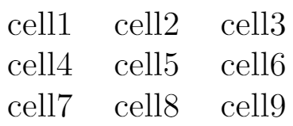
The tabular environment is the default LaTeX method to create tables. You must specify a parameter to this environment; here we use {c c c} which tells LaTeX there are three columns and the text inside each one of them must be centred.
The tabular environment provides additional flexibility; for example, you can put separator lines in between each column:
\begin{center}
\begin{tabular}{ |c|c|c| }
\hline
cell1 & cell2 & cell3 \\
cell4 & cell5 & cell6 \\
cell7 & cell8 & cell9 \\
\hline
\end{tabular}
\end{center}
Open this example in Overleaf.
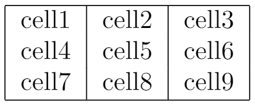
Here is a description of the constructions used in the example above:
{ |c|c|c| }- This declares that three columns, separated by a vertical line, are going to be used in the table. Each
cmeans that the contents of the column will be centred. You can also userto align the text to the right andlfor left alignment.
\hline- This will insert a horizontal line on top of the table and at the bottom too. There is no restriction on the number of times you can use
\hline.
cell1 & cell2 & cell3 \\- Each
&is a cell separator and the double-backslash\\sets the end of this row.
Below you can see a second example which uses various vertical and horizontal lines (often called "rules"):
\begin{center}
\begin{tabular}{||c c c c||}
\hline
Col1 & Col2 & Col2 & Col3 \\ [0.5ex]
\hline\hline
1 & 6 & 87837 & 787 \\
\hline
2 & 7 & 78 & 5415 \\
\hline
3 & 545 & 778 & 7507 \\
\hline
4 & 545 & 18744 & 7560 \\
\hline
5 & 88 & 788 & 6344 \\ [1ex]
\hline
\end{tabular}
\end{center}
Open this example in Overleaf.
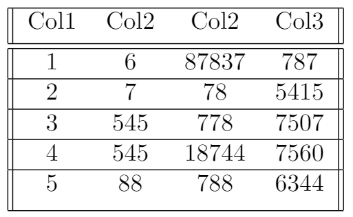
Tables with a fixed width
When formatting a table you might require a fixed width, either for each column or for the entire table. The following example adds the array package to document preamble:
\usepackage{array}
and uses it to set fixed column widths:
\documentclass{article}
\usepackage{array}
\begin{document}
\begin{center}
\begin{tabular}{ | m{5em} | m{1cm}| m{1cm} | }
\hline
cell1 dummy text dummy text dummy text& cell2 & cell3 \\
\hline
cell1 dummy text dummy text dummy text & cell5 & cell6 \\
\hline
cell7 & cell8 & cell9 \\
\hline
\end{tabular}
\end{center}
\end{document}
Open this example in Overleaf.
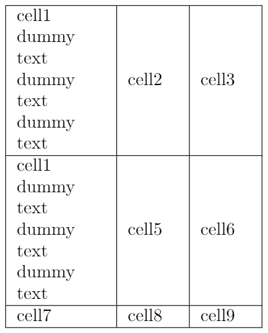
In the tabular environment, the parameter m{5em} sets a width of 5em for the first column (1cm for the other two) and centres the text in the middle of the cell. The aligning options are m for middle, p for top and b for bottom. When using these parameters the text is automatically formatted to fit inside each cell.
If you don't need to control the width of each cell, but of the entire table and then evenly distribute the space within, use the tabularx package. See the example below:
\documentclass{article}
\usepackage{tabularx}
\begin{document}
\begin{tabularx}{0.8\textwidth} {
| >{\raggedright\arraybackslash}X
| >{\centering\arraybackslash}X
| >{\raggedleft\arraybackslash}X | }
\hline
item 11 & item 12 & item 13 \\
\hline
item 21 & item 22 & item 23 \\
\hline
\end{tabularx}
\end{document}
Open this example in Overleaf.
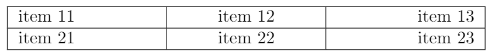
The environment tabularx is similar to tabular but more flexible. To use it, add the line \usepackage{tabularx} to the document preamble. Notice that the environment opening statement is different, in the example the table width is set to 0.8\textwidth, which is 80% of the document's text width. You can use any of the LaTeX units to set that value.
The prefix inside braces | >{\raggedright\arraybackslash}X | >{\centering\arraybackslash}X | >{\raggedleft\arraybackslash}X | sets the alignment of each column: the first one to left, the second one to center and the third one to right.
Combining rows and columns
Rows and columns can be merged to create larger table cells. The following example uses the \multicolumn command to merge several columns:
\documentclass{article}
\usepackage{multirow}
\begin{document}
\begin{tabular}{ |p{3cm}||p{3cm}|p{3cm}|p{3cm}| }
\hline
\multicolumn{4}{|c|}{Country List} \\
\hline
Country Name or Area Name& ISO ALPHA 2 Code &ISO ALPHA 3 Code&ISO numeric Code\\
\hline
Afghanistan & AF &AFG& 004\\
Aland Islands& AX & ALA &248\\
Albania &AL & ALB& 008\\
Algeria &DZ & DZA& 012\\
American Samoa& AS & ASM&016\\
Andorra& AD & AND &020\\
Angola& AO & AGO&024\\
\hline
\end{tabular}
\end{document}
Open this example in Overleaf.
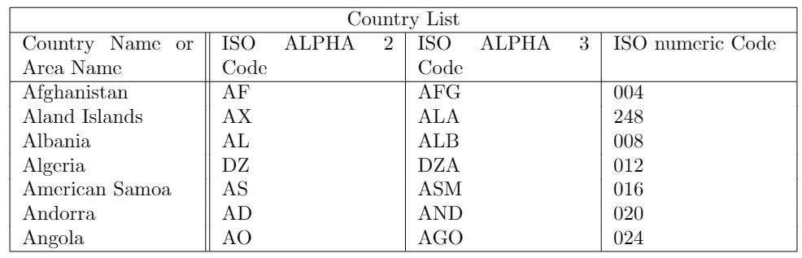
Let's review each component of the command \multicolumn{4}{|c|}{Country List} \\:
{4}- The number of columns to be combined: 4 in this case.
{|c|}- Delimiters and alignment of the resulting cell: in this case the text will be centred and a vertical line will be drawn at each side of the cell.
{Country List}- Text to be displayed inside the cell.
To combine rows you need to add the multirow package to your document preamble:
\usepackage{multirow}
You can then use the \multirow command in your document:
\documentclass{article}
\usepackage{multirow}
\begin{document}
\begin{center}
\begin{tabular}{ |c|c|c| }
\hline
col1 & col2 & col3 \\
\hline
\multirow{3}{4em}{Multiple row} & cell2 & cell3 \\
& cell5 & cell6 \\
& cell8 & cell9 \\
\hline
\end{tabular}
\end{center}
\end{document}
Open this example in Overleaf.
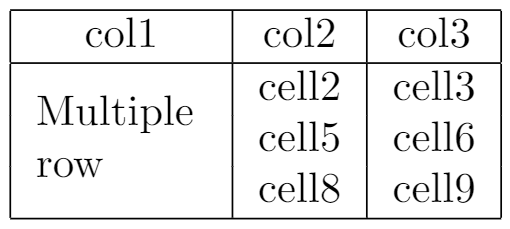
The multirow command takes three parameters; our example uses the following settings:
- the number of rows to be combined:
3 - the width of the column:
4em - the content of the cell:
Multiple row
Multi-page tables
If you have to insert a very long table, which takes up two or more pages in your document, use the longtable package. First, add the following line to your document preamble:
\usepackage{longtable}
You can then use the longtable environment, as shown in the following example:
\documentclass{article}
\usepackage{longtable}
\begin{document}
\begin{longtable}[c]{| c | c |}
\caption{Long table caption.\label{long}}\\
\hline
\multicolumn{2}{| c |}{Begin of Table}\\
\hline
Something & something else\\
\hline
\endfirsthead
\hline
\multicolumn{2}{|c|}{Continuation of Table \ref{long}}\\
\hline
Something & something else\\
\hline
\endhead
\hline
\endfoot
\hline
\multicolumn{2}{| c |}{End of Table}\\
\hline\hline
\endlastfoot
Lots of lines & like this\\
Lots of lines & like this\\
Lots of lines & like this\\
Lots of lines & like this\\
Lots of lines & like this\\
Lots of lines & like this\\
Lots of lines & like this\\
Lots of lines & like this\\
...
Lots of lines & like this\\
\end{longtable}
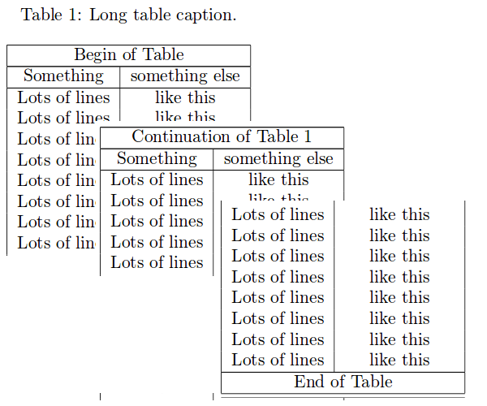
Open a longtable example in Overleaf
The behaviour of longtable is similar to the default tabular, but generates tables that can be broken by the standard LaTeX page-breaking algorithm. There are four longtable-specific elements:
\endfirsthead- Everything above this command will appear at the beginning of the table, in the first page.
\endhead- Whatever you put before this command and below
\endfirstheadwill be displayed at the top of the table in every page except the first one.
\endfoot- Similar to
\endhead, what you put after\endheadand before this command will appear at the bottom of the table in every page except the last one.
\endlastfoot- Similar to
\endfirsthead. The elements after\endfootand before this command will be displayed at the bottom of the table but only in the last page where the table appears.
Positioning tables
Positioning a table is easy if they're inside a float table environment.
\documentclass{article}
\begin{document}
Below is a table positioned exactly here:
\begin{table}[h!]
\centering
\begin{tabular}{||c c c c||}
\hline
Col1 & Col2 & Col2 & Col3 \\ [0.5ex]
\hline\hline
1 & 6 & 87837 & 787 \\
2 & 7 & 78 & 5415 \\
3 & 545 & 778 & 7507 \\
4 & 545 & 18744 & 7560 \\
5 & 88 & 788 & 6344 \\ [1ex]
\hline
\end{tabular}
\end{table}
\end{document}
Open this example in Overleaf.
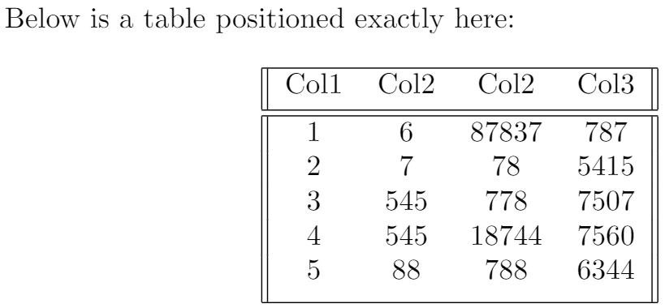
The parameter h! passed to the table environment declaration establishes that this table must be placed here, and override LaTeX defaults. The positioning parameters that can be passed-in include:
h- Will place the table here approximately.
t- Position the table at the top of the page.
b- Position the table at the bottom of the page.
p- Put the table in a special page, for tables only.
!- Override internal LaTeX parameters.
H- Place the table at this precise location, pretty much like h!.
For further examples on table positioning see the Positioning images and tables article.
In this example there are a few more commands:
\centering- Centres the table relative to the float container element.
\[1ex]- This adds extra space to the cell.
Captions, labels and references
Tables can be captioned, labelled and referenced by means of the table environment.
\documentclass{article}
\begin{document}
Table \ref{table:1} is an example of a referenced \LaTeX{} element.
\begin{table}[h!]
\centering
\begin{tabular}{||c c c c||}
\hline
Col1 & Col2 & Col2 & Col3 \\ [0.5ex]
\hline\hline
1 & 6 & 87837 & 787 \\
2 & 7 & 78 & 5415 \\
3 & 545 & 778 & 7507 \\
4 & 545 & 18744 & 7560 \\
5 & 88 & 788 & 6344 \\ [1ex]
\hline
\end{tabular}
\caption{Table to test captions and labels.}
\label{table:1}
\end{table}
\end{document}
Open this example in Overleaf.
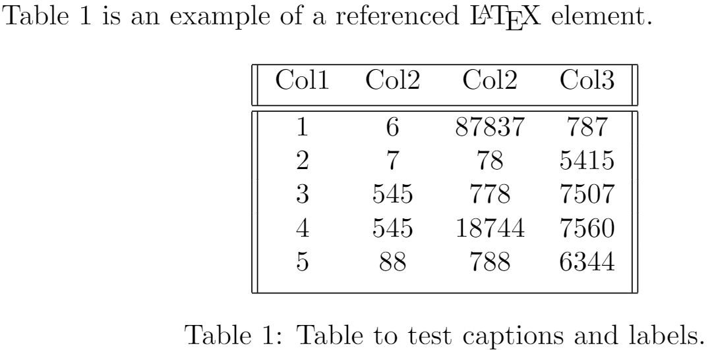
There are three important commands in the example:
\caption{Table to test captions and labels}- As you may expect this command sets the caption for the table. If you create a list of tables this caption will be used there. You can place it above or below the table.
\label{table:1}- If you need to reference the table within your document, set a label with this command. The label will number the table and, when combined with the
\refcommand, will allow you to reference it.
\ref{table:1}- This code will be substituted by the number corresponding to the referenced table.
List of tables
To create a list of tables use the \listoftables command. The caption of each table will be used to generate this list. For languages supported by the babel package, the title "List of tables" will be translated accordingly. See the article about International language support for more info.
\documentclass{article}
\begin{document}
\listoftables
\vspace{5pt}
The table \ref{table:1} is an example of referenced \LaTeX{} elements.
\begin{table}[h!]
\centering
\begin{tabular}{||c c c c||}
\hline
Col1 & Col2 & Col2 & Col3 \\ [0.5ex]
\hline\hline
1 & 6 & 87837 & 787 \\
2 & 7 & 78 & 5415 \\
3 & 545 & 778 & 7507 \\
4 & 545 & 18744 & 7560 \\
5 & 88 & 788 & 6344 \\ [1ex]
\hline
\end{tabular}
\caption{This is the caption for the first table.}
\label{table:1}
\end{table}
\begin{table}[h!]
\centering
\begin{tabular}{||c c c c||}
\hline
Col1 & Col2 & Col2 & Col3 \\ [0.5ex]
\hline\hline
4 & 545 & 18744 & 7560 \\
5 & 88 & 788 & 6344 \\ [1ex]
\hline
\end{tabular}
\caption{This is the caption for the second table.}
\label{table:2}
\end{table}
\end{document}
Open this example in Overleaf.
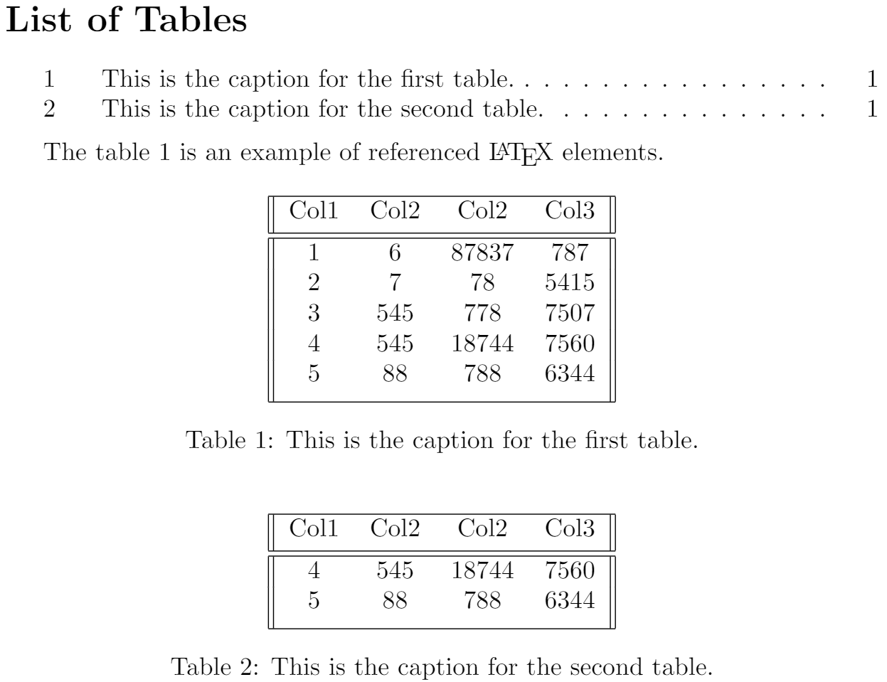
Changing the appearance of a table
Several table elements can be modified to suit the needs of your document. Below you will learn how to modify the line thickness, the line colour and the background colour of the cells in your table.
Line width and cell padding
The legibility of a table can sometimes be improved by incrementing the column spacing and row stretch.
\documentclass{article}
\setlength{\arrayrulewidth}{0.5mm}
\setlength{\tabcolsep}{18pt}
\renewcommand{\arraystretch}{1.5}
\begin{document}
\begin{tabular}{ |p{3cm}|p{3cm}|p{3cm}| }
\hline
\multicolumn{3}{|c|}{Country List} \\
\hline
Country Name or Area Name& ISO ALPHA 2 Code &ISO ALPHA 3 \\
\hline
Afghanistan & AF &AFG \\
Aland Islands & AX & ALA \\
Albania &AL & ALB \\
Algeria &DZ & DZA \\
American Samoa & AS & ASM \\
Andorra & AD & AND \\
Angola & AO & AGO \\
\hline
\end{tabular}
\end{document}
Open this example in Overleaf.
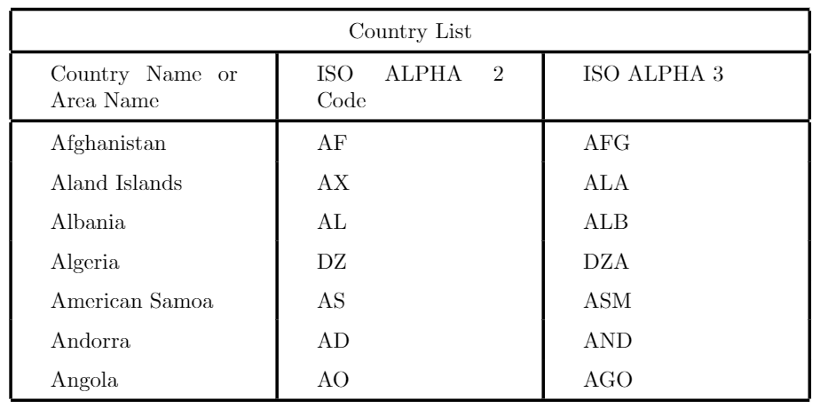
A description of the commands is provided below:
\setlength{\arrayrulewidth}{0.5mm}- This sets the thickness of the borders of the table. In the example is 0.5mm but you can use other units—see the article Lengths in LaTeX for a complete list.
\setlength{\tabcolsep}{18pt}- The space between the text and the left/right border of its containing cell is set to 18pt with this command. Again, you may use other units if needed.
\renewcommand{\arraystretch}{1.5}- The height of each row is set to 1.5 relative to its default height.
Colour alternating rows
You can apply alternating colours to the rows of your table by using the xcolor package with the table option, as demonstrated in the following example:
\documentclass{article}
\usepackage[table]{xcolor}
\setlength{\arrayrulewidth}{0.5mm}
\setlength{\tabcolsep}{18pt}
\renewcommand{\arraystretch}{2.5}
\begin{document}
{\rowcolors{3}{green!80!yellow!50}{green!70!yellow!40}
\begin{tabular}{ |p{3cm}|p{3cm}|p{3cm}| }
\hline
\multicolumn{3}{|c|}{Country List} \\
\hline
Country Name or Area Name& ISO ALPHA 2 Code &ISO ALPHA 3 \\
\hline
Afghanistan & AF &AFG \\
Aland Islands & AX & ALA \\
Albania &AL & ALB \\
Algeria &DZ & DZA \\
American Samoa & AS & ASM \\
Andorra & AD & AND \\
Angola & AO & AGO \\
\hline
\end{tabular}}
\end{document}
Open this example in Overleaf.
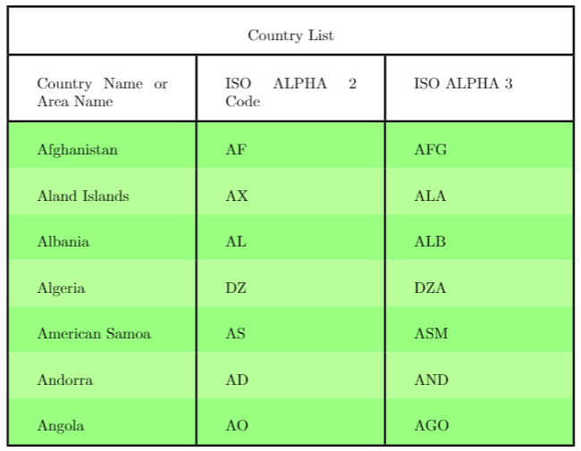
Notice the braces right before the command
\rowcolors{3}{green!80!yellow!50}{green!70!yellow!40}
and after the tabular environment. The command \rowcolors takes three parameters each passed inside braces:
- the row to start,
- the colour for odd rows and
- the colour for even rows.
See the xcolor package documentation (at the further reading section) for a list of available colours and how to create your own. In the example the colours green and yellow are mixed in different proportions.
For the command to work make sure to add
\usepackage[table]{xcolor}
to the preamble of your LaTeX file.
Colouring a table (cells, rows, columns and lines)
All elements in a table can be customized to use a specific colour. Again, this functionality is provided by xcolor so you must add
\usepackage[table]{xcolor}
to the preamble. Below you can see an example.
\documentclass{article}
\usepackage[table]{xcolor}
\setlength{\arrayrulewidth}{1mm}
\setlength{\tabcolsep}{18pt}
\renewcommand{\arraystretch}{2.5}
\newcolumntype{s}{>{\columncolor[HTML]{AAACED}} p{3cm}}
\arrayrulecolor[HTML]{DB5800}
\begin{document}
\begin{tabular}{ |s|p{3cm}|p{3cm}| }
\hline
\rowcolor{lightgray} \multicolumn{3}{|c|}{Country List} \\
\hline
Country Name or Area Name& ISO ALPHA 2 Code &ISO ALPHA 3 \\
\hline
Afghanistan & AF &AFG \\
\rowcolor{gray}
Aland Islands & AX & ALA \\
Albania &AL & ALB \\
Algeria &DZ & DZA \\
American Samoa & AS & ASM \\
Andorra & AD & \cellcolor[HTML]{AA0044} AND \\
Angola & AO & AGO \\
\hline
\end{tabular}
\end{document}
Open this example in Overleaf.
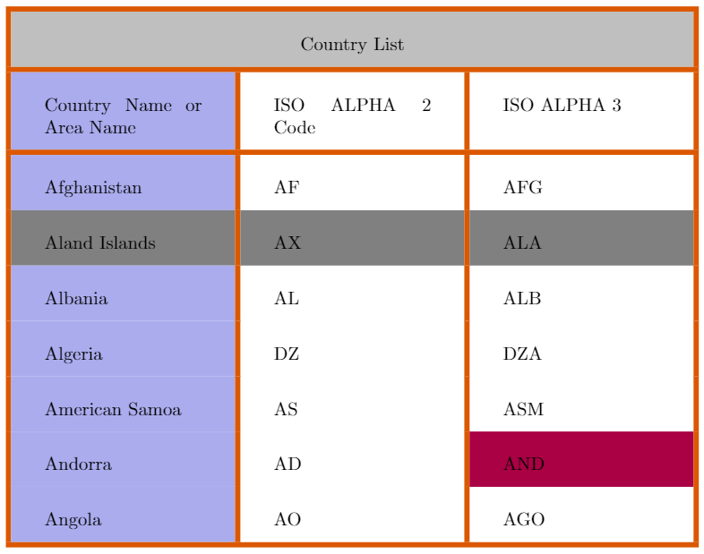
Below is a description about how to change the colour of each element in the table:
- Colour of the lines. The command
\arrayrulecoloris used for this. In the example an HTML format is used, but other formats are available too, see the xcolor documentation for a complete list (link provided at the further reading section).
- Background colour of a cell. Use the command
\cellcolor. You can either enter the name directly inside the braces (red, gray, green and so on) or pass a format parameter inside brackets (HTML in the example) and then set the desired colour inside the braces using the established format.
- Background colour of a row. In this case
\rowcolorwill accomplish that. The same observations about colour selection mentioned in the two previous commands are valid for this one.
- Background colour of a column. This one is a bit tricky, but the easiest way is to define a new column type. The command define a column type called
\newcolumntype{s}{>{\columncolor[HTML]{AAACED}} p{3cm}}
swhose alignment isp, the column width is3cmand the colour is set with HTML format toAAACED. This new column type is used in thetabularenvironment.
Reference guide
A brief description of parameters in the tabular environment.
Tables can be created using tabular environment.
\begin{tabular}[pos]{cols}
table content
\end{tabular}
where options can be:
pos: Vertical position. It can assume the following values:
t |
the line at the top is aligned with the text baseline |
b |
the line at the bottom is aligned with the text baseline |
c or none |
the table is centred to the text baseline |
cols: Defines the alignment and the borders of each column. It can have the following values:
l |
left-justified column |
c |
centred column |
r |
right-justified column |
p{'width'} |
paragraph column with text vertically aligned at the top |
m{'width'} |
paragraph column with text vertically aligned in the middle (requires array package)
|
b{'width'} |
paragraph column with text vertically aligned at the bottom (requires array package)
|
| |
vertical line |
|| |
double vertical line |
*{num}{form} |
the format form is repeated num times; for example *{3}{|l}| is equal to |l|l|l|
|
To separate between cells and introducing new lines use the following commands:
& |
column separator |
\\ |
start new row (additional space may be specified after \\ using square brackets, such as \\[6pt])
|
\hline |
horizontal line between rows |
\newline |
start a new line within a cell (in a paragraph column) |
\cline{i-j} |
partial horizontal line beginning in column i and ending in column j |
Further reading
For more information see
Overleaf guides
- Creating a document in Overleaf
- Uploading a project
- Copying a project
- Creating a project from a template
- Using the Overleaf project menu
- Including images in Overleaf
- Exporting your work from Overleaf
- Working offline in Overleaf
- Using Track Changes in Overleaf
- Using bibliographies in Overleaf
- Sharing your work with others
- Using the History feature
- Debugging Compilation timeout errors
- How-to guides
- Guide to Overleaf’s premium features
LaTeX Basics
- Creating your first LaTeX document
- Choosing a LaTeX Compiler
- Paragraphs and new lines
- Bold, italics and underlining
- Lists
- Errors
Mathematics
- Mathematical expressions
- Subscripts and superscripts
- Brackets and Parentheses
- Matrices
- Fractions and Binomials
- Aligning equations
- Operators
- Spacing in math mode
- Integrals, sums and limits
- Display style in math mode
- List of Greek letters and math symbols
- Mathematical fonts
- Using the Symbol Palette in Overleaf
Figures and tables
- Inserting Images
- Tables
- Positioning Images and Tables
- Lists of Tables and Figures
- Drawing Diagrams Directly in LaTeX
- TikZ package
References and Citations
- Bibliography management with bibtex
- Bibliography management with natbib
- Bibliography management with biblatex
- Bibtex bibliography styles
- Natbib bibliography styles
- Natbib citation styles
- Biblatex bibliography styles
- Biblatex citation styles
Languages
- Multilingual typesetting on Overleaf using polyglossia and fontspec
- Multilingual typesetting on Overleaf using babel and fontspec
- International language support
- Quotations and quotation marks
- Arabic
- Chinese
- French
- German
- Greek
- Italian
- Japanese
- Korean
- Portuguese
- Russian
- Spanish
Document structure
- Sections and chapters
- Table of contents
- Cross referencing sections, equations and floats
- Indices
- Glossaries
- Nomenclatures
- Management in a large project
- Multi-file LaTeX projects
- Hyperlinks
Formatting
- Lengths in LaTeX
- Headers and footers
- Page numbering
- Paragraph formatting
- Line breaks and blank spaces
- Text alignment
- Page size and margins
- Single sided and double sided documents
- Multiple columns
- Counters
- Code listing
- Code Highlighting with minted
- Using colours in LaTeX
- Footnotes
- Margin notes
Fonts
Presentations
Commands
Field specific
- Theorems and proofs
- Chemistry formulae
- Feynman diagrams
- Molecular orbital diagrams
- Chess notation
- Knitting patterns
- CircuiTikz package
- Pgfplots package
- Typesetting exams in LaTeX
- Knitr
- Attribute Value Matrices
Class files
- Understanding packages and class files
- List of packages and class files
- Writing your own package
- Writing your own class